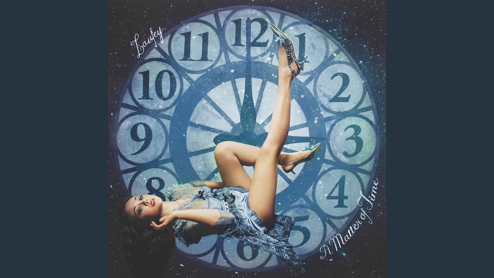

About Laufey
Laufey Lín Bīng Jónsdóttir (Icelandic: [ˈlœyːvei ˈliːn ˈjounsˌtouhtɪr̥]; Chinese: 林冰; pinyin: Lín Bīng; born 23 April 1999), known mononymously as Laufey (/ˈleɪveɪ/ LAY-vay), is an Icelandic singer-songwriter and musician. She rose to prominence in the early 2020s for her success as a jazz-inspired pop artist. Having performed as a cello soloist with the Iceland Symphony Orchestra at age 15, Laufey was a finalist in the 2014 edition of Ísland Got Talent (Iceland's Got Talent), and a semi-finalist on The Voice Iceland the following year. She released her debut EP, Typical of Me (2021), and graduated from the Berklee College of Music in Boston. Her debut album, Everything I Know About Love (2022), charted in Iceland and the United States, where it peaked at number 3 on the US Jazz Albums chart along with the US Top albums Sales Chart where it peaked at number 50. Its follow-up, Bewitched (2023), won Best Traditional Pop Vocal Album at the 66th Annual Grammy Awards (2024) and its single "From the Start" found moderate chart success in Canada, New Zealand, and the United Kingdom. Her third album, A Matter Of Time, is set to be released on 22 August 2025.[2]
Who is She
Although Laufey was influenced by classical music, classical artists such as Frédéric Chopin,[39] and played it from an early age, she turned to her father's records of female jazz musicians such as Ella Fitzgerald and Billie Holiday to develop her musical style.[8] She has cited Fitzgerald and Chet Baker as her biggest artistic influences, naming the former as her favorite musician. Laufey also cited Taylor Swift, Norah Jones, and Adele as inspirations for her musicianship; she said "[Taylor Swift] has done for pop and country what I hope to do for jazz. She has managed to unite people across the world which is one of my main goals as a musician."[40][41] The genre of Laufey's music style has been subject for debate. She describes her genre as jazz or jazz pop, while organizations such as National Public Radio,[42] the New York Times, and The Sydney Morning Herald[43] have noted that her music includes elements of jazz, pop, bossa nova, and classical, describing the entirety as traditional pop or old-time pop due to the blend of styles in her songs into one.[44]
Why is She Important
Many critics such as Maura Judkis, an editor at the Washington Post,[45] and editor Murray Stassen from Music Business Worldwide[46] noted that Laufey is "bringing back" jazz to Gen Z, as the genre has largely declined commercially, and has received less recognition than other genres when compared to its heyday. In a 2023 article, Music journalist Michael Dwyer of The Sydney Morning Herald described her as a "TikTok jazz ambassador".[43] Organizations such as Billboard and National Public Radio opined that Laufey created a blueprint for the success of jazz in the music industry today, helping push the genre back into the mainstream scene.[41][47] Her second album, Bewitched, received praise from critics due to its composition and her take on jazz. The album received a score of 83 out of 100 on review aggregator Metacritic based on six critics' reviews.[48] Morgan Enos, writer at Grammys.com, wrote that Bewitched's success shows Laufey has left "jazz neophytes spellbound".[49] She was named one of Time’s Women of the Year for 2025.[50] She also made it to the Madame Tussauds Hot 100 list for 2025.[51]
